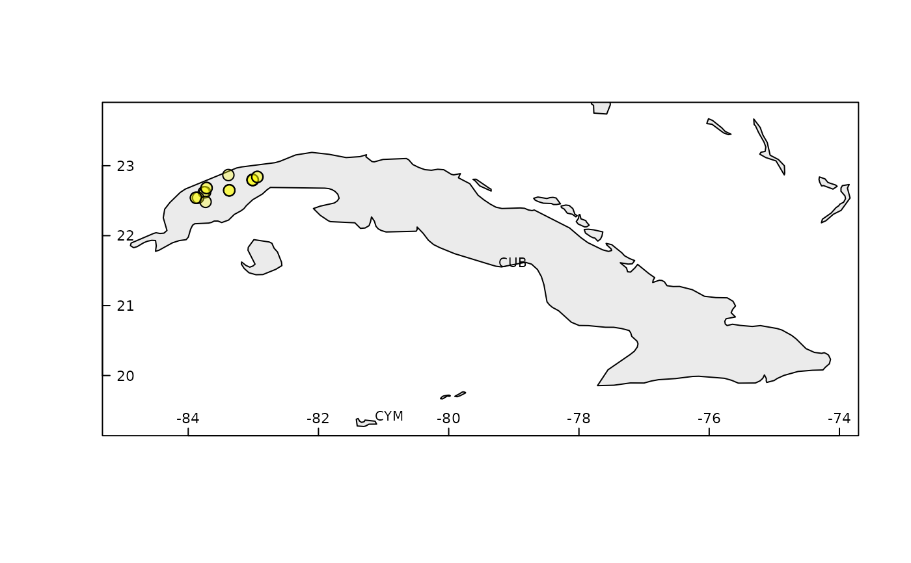

rangemap_explore generates simple figures to visualize species occurrence data in the geography.
rangemap_explore(occurrences, show_countries = FALSE, graphic_device = FALSE)
| occurrences | a data.frame containing geographic coordinates of species occurrences, columns must be: Species, Longitude, and Latitude. Geographic coordinates must be in decimal degrees (WGS84). |
|---|---|
| show_countries | (logical) if |
| graphic_device | (logical) if |
A simple figure of species occurrences in a geographical context.
Base map of countries of the world is a SpatialPolygonsDataFrame downloaded from the Natural Earth database (scale = 50).
# getting the data data("occ_f", package = "rangemap") # simple figure of the species occurrence data rangemap_explore(occurrences = occ_f, show_countries = TRUE)#> Warning: NULL source CRS comment, falling back to PROJ string#> Warning: CRS object has no comment